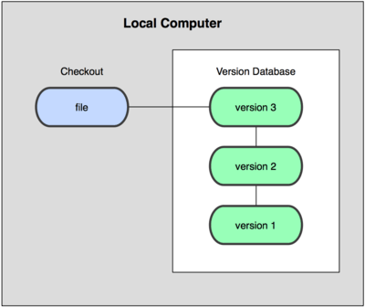
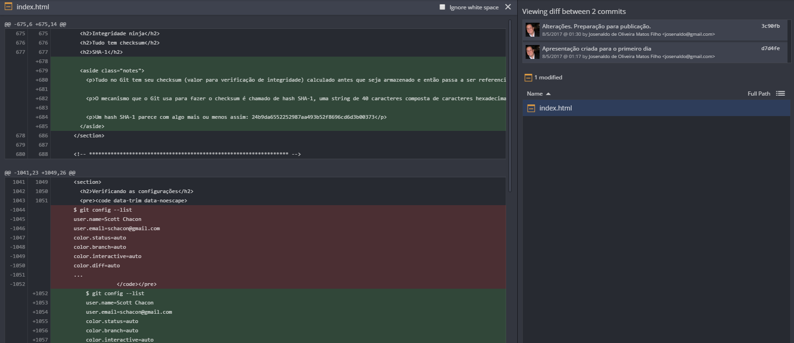
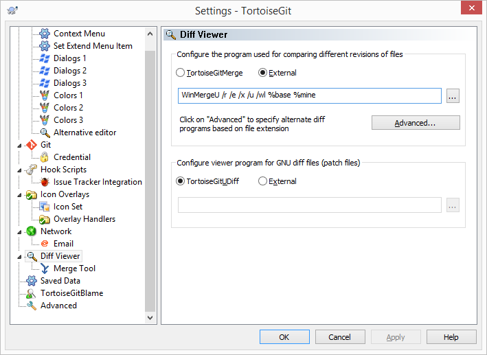

Formação GIT
Uma Dádiva dos ninjas
Atenção
Se estiver vendo essa apresentação no endereço https://josenaldo.github.io/curso-git-github/#/, aperte 's' para ver as notas dos slides
Quem sou?
Josenaldo de Oliveira Matos Filho
Jugleader no UaiJUG
Programador aposentado
NÃO SOU MILIONÁRIO EXCÊNTRICO
APENAS EXCÊNTRICO
Contatos
Email: josenaldo@gmail.com
Twitter: @josenaldomatos
Github: https://github.com/josenaldo
Steam: josenaldo
PSN: vudu_reverso
Quem somos?

Grupo de usuários Java do Triângulo Mineiro
Tomo 1
Introdução ao Controle de Versão
O dia em que rasguei o CD!
Como estudantes fazem versionamento?
Como estudantes compartilham documentos
Avaliação rápida
- Já perdeu código por causa de alterações?
- Tem dificuldade em saber quem alterou o que e quando?
- Tem dificuldade em recuperar uma versão do documento?
- Tem problemas em manter variações do sistema ao mesmo tempo?
Se respondeu sim pra qualquer uma das perguntas anteriores, você precisa urgentemente de um sistema de controle de versão
Controle de versão
Um sistema de controle de versão é um software com a finalidade de gerenciar diferentes versões no desenvolvimento de um documento qualquer...
Boring definition...
Controle de versão - Vantagens
Controle de histórico
Trabalho em equipe
Marcação e resgate de versões estáveis
Variações do projeto
Backup do projeto
Controle de versão local
Controle de versão centralizado

Controle de versão distribuído

Exemplos Open Source
-
Controle de versão centralizado
- CVS
- SVN
-
Controle de versão distribuído
- Git
- Mercurial
Senta que lá vem história...
Durante a maior parte do período de manutenção do kernel do Linux (1991-2002), as mudanças no software eram repassadas como patches e arquivos compactados.
A equipe do Linux usava um Gambi Design Pattern, Zippomatic Versioning
Tá pensando que o Torvalds é bagunça?
Em 2002, o projeto do kernel do Linux começou a usar um sistema DVCS proprietário chamado BitKeeper.
Torvalds fica full pistola!
Em 2005, o relacionamento entre a comunidade que desenvolvia o kernel e a empresa que desenvolvia o BitKeeper se desfez. Isso levou a comunidade de desenvolvedores do Linux (em particular Linus Torvalds) a desenvolver sua própria ferramenta.
Uai sô sérios?
Principais objetivos do novo sistema:
- Velocidade
- Design simples
- Totalmente distribuído
- Feito pra aguentar o tranco!
Assim nasceu o Git!

Tomo 2
Git - Workflow básico
Instalação
https://git-scm.com/book/pt-br/v1/Primeiros-passos-Instalando-Git
Configuração inicial *nix

Configuração inicial Windows

Identidade
$ git config --global user.name "John Doe"
$ git config --global user.email johndoe@example.com
Operações locais
O seu repositório é uma CÓPIA
Operações locais
A maior parte das operações ocorre localmente
Ex: commit, add, revert...
Os 3 estados

Inicializando um repositório
$ git init
Verificando o status de seus arquivos
$ git status
On branch master
Initial commit
nothing to commit (create/copy files and
use "git add" to track)
Adicionando novos arquivos
$ git add README.md
$ git status
On branch master
Initial commit
Changes to be committed:
(use "git rm --cached <file>..." to unstage)
new file: README.md
Alterando arquivos adicionados
- Criar e adicionar arquivo index.html
- Alterar arquivo index.html
- Alterar o arquivo README.md
$ git add *Atenção!!!
Quando o git add é executado, o git seleciona o arquivo do jeito que ele está.
Se esse arquivo for alterado após o git add, é necessário executar o git add novamente.
Comitando
$ git commit -m "Comita com mensagem"
git commit -a -m 'Adiciona e comita com mensagem'
Ciclo de vida do arquivo

Tomo 3
Git - Workflow remoto
Inicializando um repositório de armazenamento
$ git init --bare
Clonando um repositório existente
$ git clone https://github.com/josenaldo/workshop-git.git
$ git clone git@github.com:josenaldo/workshop-git.git
Atenção: Recado pra quem conhece SVN!
Clone != Checkout
Obtendo atualizações do repositório remoto
$ git fetch origin
Baixa atualizações e novos ramos do projeto do servidor remoto
Atualizando o repositório local
$ git pull origin
Faz um fetch e tenta fazer um merge das atualizações do ramo atual com a cópia de trabalho
Atualizando o repositório remoto
$ git push origin
Tomo 4
Conhecendo o Github
Github é como as pessoas desenvolvem software!
GitHub é uma comunidade onde 21 milhões de pessoas aprendem, compartilham e trabalham juntas para construir software!
https://github.comAlguns dados
- Mais de 21 milhões de usuários
- Mais de 58 milhões de projetos
- Mais e mais empresas adotam o Github com elemento no processo seletivo
Quem usa o Github
- Governos: EUA, Rússia, Japão, Brasil
- Empresas: de micro a gigantes!
- Universidades
- Comunidades
- Desenvolvedores
Só empresa hipster usa o Github?
Criando uma conta
Criando um novo repositório
Clonando o novo repositório
Home do projeto: Aba code
Home do projeto: Aba issues
Home do projeto: Aba wiki
Comandos vistos até agora
- Iniciar repositório: git init
- Adicionar arquivos: git add
- Comitar arquivos: git commit
- Verificar status: git status
- Clonar repositório: git clone
- Pegar atualizações: git pull
- Enviar atualizações: git push
Tomo 5
Release the Gitkraken
Trabalhar na linha de comando?
Clients para Git
Instalação
- Baixe o GitKraken
- Instale o GitKraken
- Use o GitKraken
Configurando o Gitkraken
Iniciando um repositório
Iniciando um repositório local
Iniciando um repositório no Github
Clonando um repositório
Clonando um repositório do Github
Comitando arquivos

Demo: operações básicas no GitKraken
Tomo 6
Subindo de nível
Git tem
Tudo tem checksum SHA-1
24b9da6552252987aa493b52f8696cd6d3b00373
Git só adiciona dados
Quase todas as ações do Git adicionam dados no repositório
Antes do commit, você pode bagunçar mudanças
Git só adiciona dados
Após o commit, tudo é registrado e é muito difícil perder algo
Isso permite que possamos fazer experiências sem medo
Snapshots x diferenças

Snapshots x diferenças

Verificando as mudanças
$ git diff
diff --git a/index.html b/index.html
index 2c78d33..544c542 100644
--- a/index.html
+++ b/index.html
@@ -16,11 +16,11 @@
</head>
<body>
-
+ <h1>Olha o titulo adicionado!
+ <h2>Outro só pra variar</h2>
+
<script src="https://ajax.googleapis.com/ajax/libs/jquery/1.11.3/jquery.min.js"></script>
- <!-- Include all compiled plugins (below), or include individual files as needed -->
<script src="https://maxcdn.bootstrapcdn.com/bootstrap/3.3.5/js/bootstrap.min.js"></script>
-
- <script src="https://ajax.googleapis.com/ajax/libs/angularjs//angular.js"></script>
+ <script src="https://ajax.googleapis.com/ajax/libs/angularjs//angular.js"></script>
</body>
</html>
warning: LF will be replaced by CRLF in index.html.
The file will have its original line endings in your working directory.
Verificando as mudanças
Verificando mudanças do arquivo index.html, da versão atual para última
$ git diff index.html
Verificando mudanças com o GitKraken
Verificando mudanças com o GitKraken
Ignorando arquivos
Configurar um arquivo .gitignore antes de começar a trabalhar é uma boa ideia.
Ignorando arquivos - Regras
- Linhas em branco ou iniciando com # são ignoradas.
- Padrões glob comuns funcionam. *
* Definição emocionante de glob patterns na wikipedia
Ignorando arquivos - Regras
- Padrões terminados com uma barra (/) especificam diretórios.
- Ponto de exclamação (!) no início para negar o padrão.
Ignorando arquivos
.idea/
*.iml
*.iws
*.eml
out/
.DS_Store
.svn
log/*.log
tmp/**
node_modules/
.sass-cache
css/reveal.min.css
js/reveal.min.js
Git remote
Clonando um repositório existente no USB
$ git init --bare
$ git clone /media/repositories/foo/
$ git remote add usb file:///media/repositories/foo
$ git branch --set-upstream master usb/master
Usando o git com pasta compartilhada do windows
$ git clone \\odin\projetos\teste
Usando o git com mais de um repositório remoto
Remover arquivos
$ git rm arquivo
$ git rm --cached readme.txt
$ git rm log/\*.log
Movendo arquivos
$ git mv arquivo_origem arquivo_destino
Visualizando o histórico de commits
$ git log
commit ca82a6dff817ec66f44342007202690a93763949
Author: Scott Chacon <schacon@gee-mail.com>
Date: Mon Mar 17 21:52:11 2008 -0700
changed the verison number
commit 085bb3bcb608e1e8451d4b2432f8ecbe6306e7e7
Author: Scott Chacon <schacon@gee-mail.com>
Date: Sat Mar 15 16:40:33 2008 -0700
removed unnecessary test code
...
Parâmetros do git log
| Opção | Descrição |
|---|---|
-p
|
Mostra o patch introduzido com cada commit. |
--stat
|
Mostra estatísticas de arquivos modificados em cada commit. |
--shortstat
|
Mostra somente as linhas modificadas/inseridas/excluídas do comando --stat. |
--name-only
|
Mostra a lista de arquivos modificados depois das informações do commit. |
--name-status
|
Mostra a lista de arquivos afetados com informações sobre adição/modificação/exclusão dos mesmos. |
Desfazendo coisas no git
Cuidado! Essa é uma das poucas áreas no Git onde você pode perder algum trabalho se fizer errado.
Modificando o último commit
$ git commit --amend
$ git commit -m 'initial commit'
$ git add forgotten_file
$ git commit --amend
Tirando arquivos da área de seleção
Você adicionou arquivos (git add) e quer remover algum deles?
$ git add .
$ git status
# On branch master
# Changes to be committed:
# (use "git reset HEAD <file>..." to unstage)
#
# modified: README.txt
# modified: benchmarks.rb
Git reset neles!
$ git reset HEAD benchmarks.rb
benchmarks.rb: locally modified
$ git status
# On branch master
# Changes to be committed:
# (use "git reset HEAD <file>..." to unstage)
#
# modified: README.txt
#
# Changes not staged for commit:
# (use "git add <file>..." to update what will be committed)
# (use "git checkout -- <file>..." to discard changes in working directory)
#
# modified: benchmarks.rb
#
Desfazendo um Arquivo Modificado
Alterou um arquivo e quer desfazer a alteração?
# Changes not staged for commit:
# (use "git add <file>..." to update what will be committed)
# (use "git checkout -- <file>..." to discard changes in working directory)
#
# modified: benchmarks.rb
#
Use checkout!
$ git checkout -- benchmarks.rb
$ git status
# On branch master
# Changes to be committed:
# (use "git reset HEAD <file>..." to unstage)
#
# modified: README.txt
#
Ferramenta de diff
$ git config --global merge.tool vimdiff
Ferramenta de diff - Windows
Verificando as configurações
$ git config --list
user.name=Scott Chacon
user.email=schacon@gmail.com
color.status=auto
color.branch=auto
color.interactive=auto
color.diff=auto
...
Verificando uma configuração específica
$ git config user.name
Scott Chacon
Tomo 7
Trabalhando em equipe com o Git
Resumo
- * Iniciar repositório: git init
- * Adicionar arquivos: git add
- * Comitar arquivos: git commit
- * Verificar status: git status
- * Clonar repositório: git clone
- * Pegar atualizações: git pull
- * Enviar atualizações: git push
- * Verificar diferenças: git diff
- Verificar histórico: git log
- Remover arquivos: git rm
- Mover arquivos: git mov
- Adicionar servidor remoto: git remote add
Tomo 8
Publicação de sites com Github
Tomo 9
Encontrando Ajuda
Usando a ajuda do git
$ git help <verb>
$ git <verb> --help
$ man git-<verb>
Livros e referências
O guia descomplicado: http://rogerdudler.github.io/git-guide/index.pt_BR.html
O livro de referência: https://git-scm.com/book/pt-br/v1/
O simulador pra aprender branching: http://learngitbranching.js.org/
Artigos sobre o GitKraken
Perguntas?
- Email: josenaldo@gmail.com
- Twitter: @josenaldomatos
- Github: josenaldo
- Steam: josenaldo
- PSN: vudu_reverso